Premium hardware collection
Browse all 12 categories.
Explore the product ranges in the Cassle Crew catalogue. Product styles are grouped so size variations do not appear as separate products.
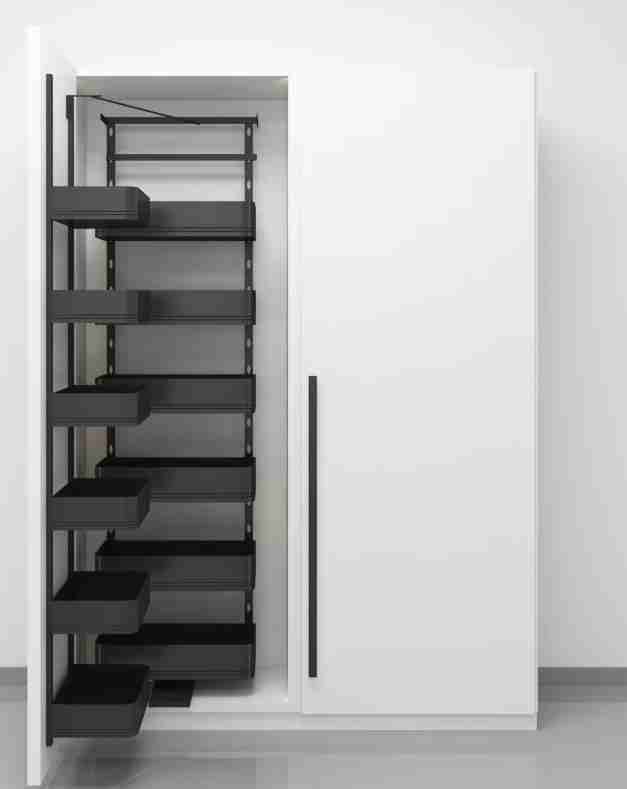
Kitchen Accessories
Kitchen pull-outs, bottle organisers, pantry units and corner storage systems.
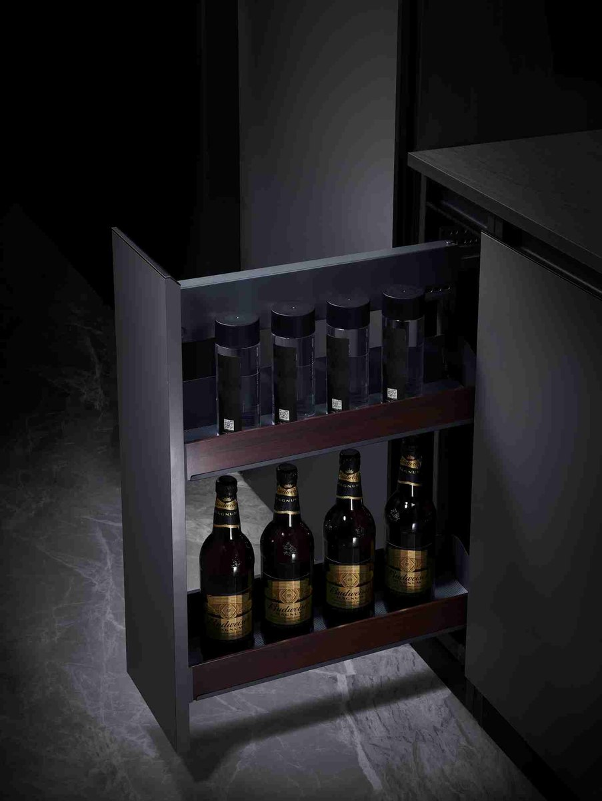
Wooden Kitchen Series
Kitchen fittings and accessories for warm, coordinated cabinetry.
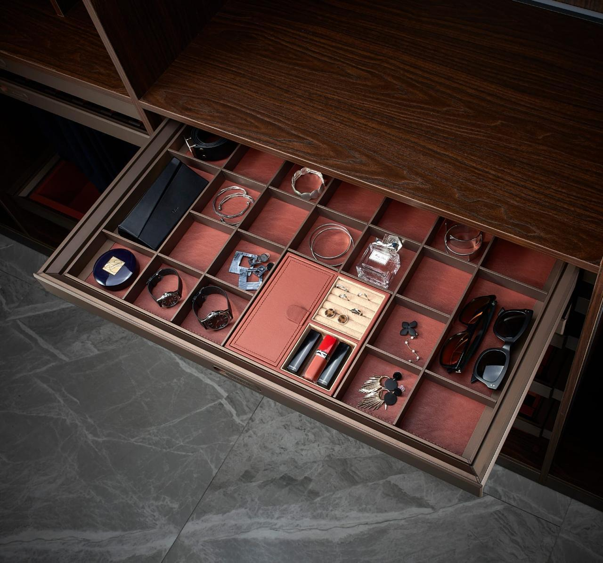
Wardrobe Series
Wardrobe storage accessories designed to make interior space work harder.
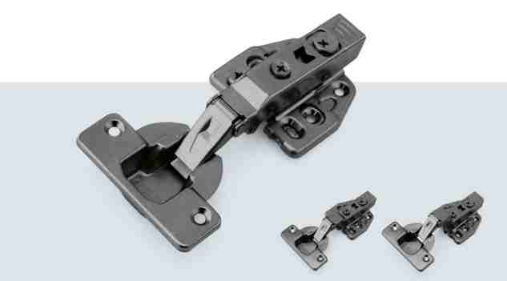
Hinges
Concealed and soft-close cabinet hinge systems.
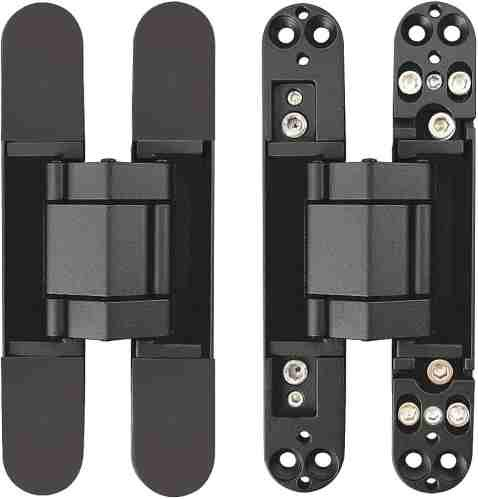
Antique Concealed Hinges
Black and antique-finish concealed hinge designs from the catalogue.
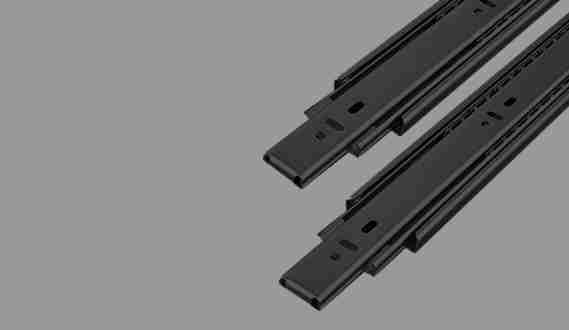
Drawer Runner
Smooth-running telescopic drawer slides and runners.
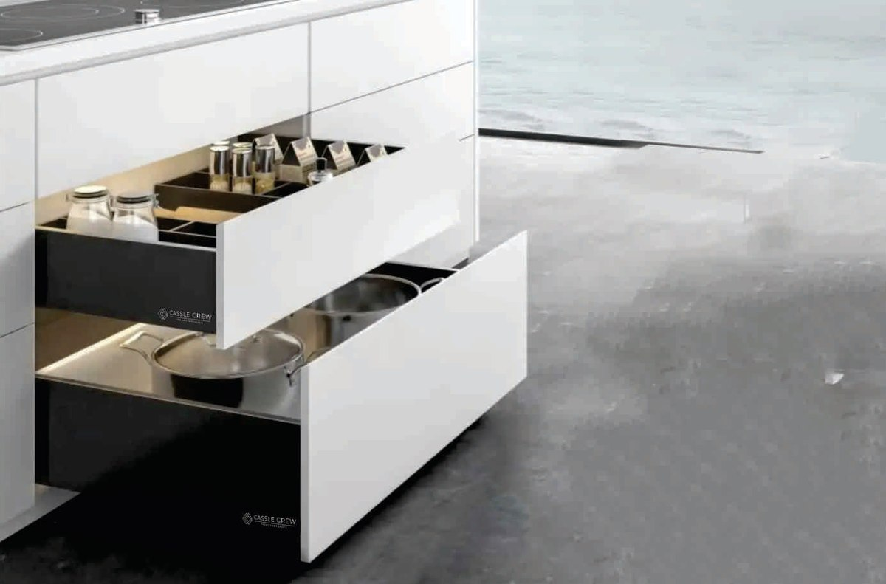
Drawer Slides / Tandem Boxes
Drawer systems and box solutions for organized storage.
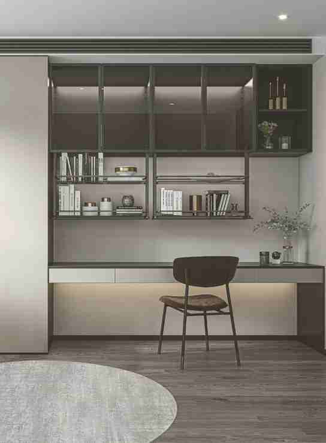
Wardrobe Sliding Systems
Sliding wardrobe and closet hardware.
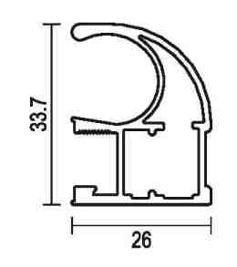
Wardrobe Profiles
Profiles and finishing elements for wardrobe systems.
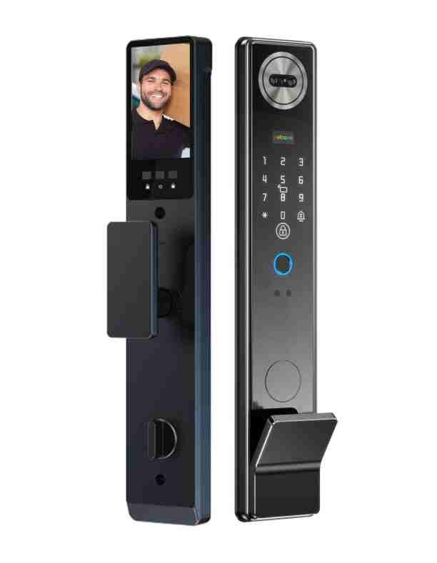
Digital Door Locks
Smart digital door locks with fingerprint, card and password access.
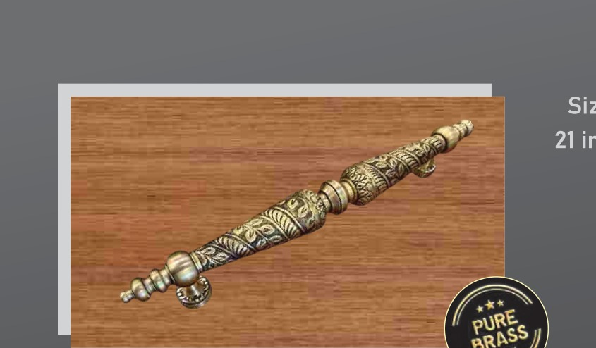
Brass Pull Handles
Pull handles and cabinet grips in decorative and metallic styles.
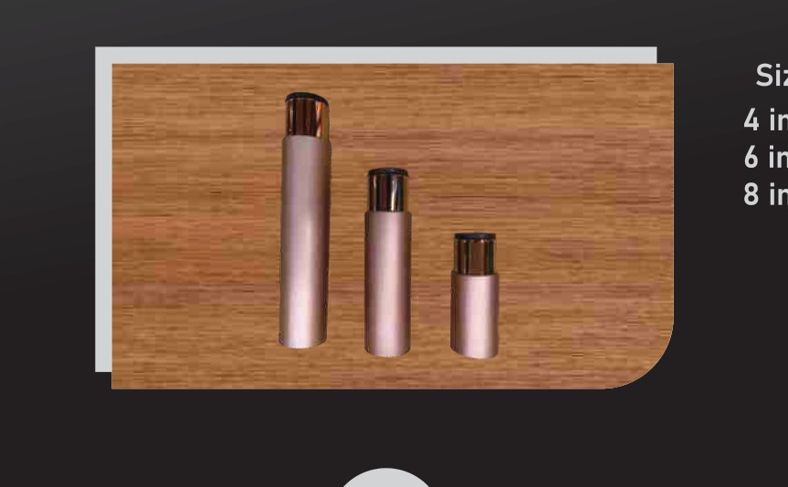
Pull Handles
Decorative pull handles from the Cassle Crew catalogue.